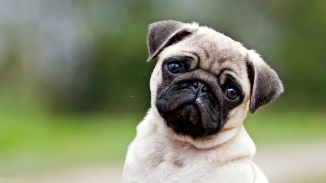

The Chihuahua is a Mexican breed of toy dog
| Chihuahua | Pastor Aleman | Bulldog |
|---|---|---|
|
|
 |
The Chihuahua is a Mexican breed of toy dog |
The German Shepherd, also known in Britain as an Alsatian | The Pug is a breed of dog with the physically distinctive features of a wrinkly, short-muzzled face, and curled tail. |
| Gato Manchas | Japones | Gato Calbo |
|---|---|---|
 |
 |
 |
Razas de gatos con manchas |
también conocido como gato de la suerte o gato de la fortuna es una popular escultura japonesa | The Sphynx cat also known as the Canadian Sphynx, is a breed of cat known for its lack of fur. |